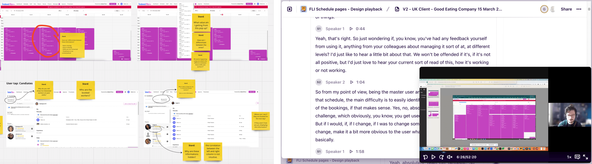
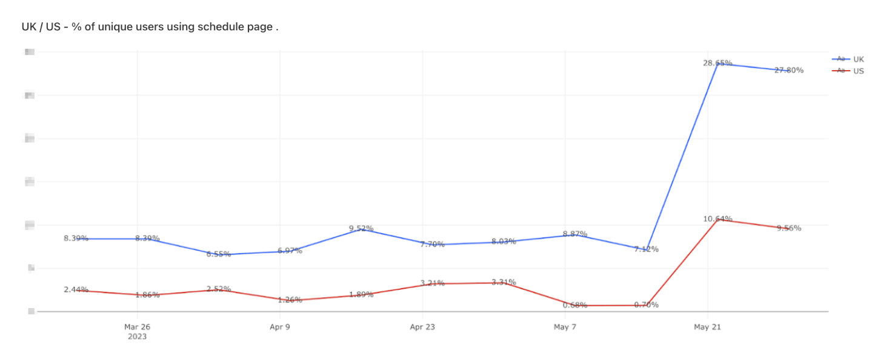

Schedule revamp
The client portal is one of the core experience of Indeed Flex. It's the ultimate B2B platform designed for Indeed clients, enabling them to oversee their job assignments and workforce. The client portal also capture extensive data, which in turn provides valuable insights for enhancing the clients' business health. This includes critical metrics like fulfilment rates, estimated costs, and a wealth of other information to drive informed decisions and operational efficiency.
The project
The schedule page is the heart of the client portal, as it allows managers to oversee their sites, shifts, and worker fulfillment. When I joined the team, the live page had not received significant attention for an extended period, and its design lacked a user-centric focus. After conducting interviews with numerous clients and account managers, we observed many usability issues: managers were struggling to understand the displayed information, and data demonstrated a significant drop in adoption and engagement, especially within the light industrial industry and among large clients with many sites, jobs, and workers to manage.
“I can't easy identify my planned shifts and workers”
IndeedFlex client
How the schedule page looked like before the revamp.
UX process
I had the opportunity to team up with a brilliant UX researcher on my team: the process began with usability tests of the schedule page. It helped us grasping all the feedback, positive and negative, that I complied into a miro board, highlighting the UX issues in need of attention.
Insights & feature priotisations
During the UX process, we conducted interviews with more than 20
clients. At Indeed, we used Dovetail to compile the UX repository,
enabling us to group common themes together. This approach proved
highly beneficial for identifying major issues and understanding the
value clients expect from the page.
We then held workshops with team members and stakeholders to analyse
the UX insights and prioritise features, leading to the
identification of four core features for the revamp:
New shift hierarchy
We found that organising shifts by location improves clarity. Additionally, we introduced individual shift boxes that display the role, start/end times, and booked vs. planned workers.
New filters
Users expressed a desire to separate shift views by location (venues or venue areas) and roles. To address this, we added new filters alongside the calendar navigation to facilitate these options and offer ways to focus on their needs.
Calendar views
Users required flexible shift views, so we introduced four options: "daily" (for 3-day focus), "weekly" (with customizable start days), "monthly" (displaying job and fulfillment stats), and an "all" view (listing all shifts).
Accessibility refinements
The previous UI, particularly its colour-scheme, posed significant issues for users, earning it the nickname "pink nightmare" from one of our interviewees. In response, we decided to entirely discard the old UI and implement the new design system, with the goal to improve accessibility with a clean, user-centric interface.
Wires & prototypes
We conducted numerous validation sessions to test prototypes, a critical step in refining the architecture of the new schedule page. During this phase, we also identified the need for managers to access meaningful insights regarding the health of their business, additional filters to refine the calendar views a colour scheme for the job boxes to emphasise unbooked shifts.
Final design
Below, you'll find the fully validated and developed final design, along with a glimpse of the calendar views and the insights feature gadget:
Weekly view:
Monthly view:
Outcome
Checking the data, in the first week after the schedule page was released, user engagement nearly tripled. In the UK, it went from 10% to 28%, and in the US, it increased from 2% to 10% with an adoption never registered before. Even after many months, we're still seeing strong numbers, with an overall average increase of 20%:
Following a similar trend, we also noticed a significant and positive impact on Salesforce-related tickets, which dropped from nearly 40% to just 12%: